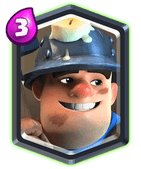

Legendary Card: Miner

After the Battle Ram nerf, Miner Poison Control decks are starting to have a comeback in the meta.
His ability to pop-up anywhere in the arena makes him a great chip-damaging card. And he has become a more versatile card since last couple of months appearing in Giant Poison decks forming a new Beatdown-Control Hybrid deck type which is surprisingly pretty strong.
You can play him in a fast, lone cycle form along with Poison or couple it with Battle Ram and Hog Rider as well as Bandit to make a Control-chip decks. He is also strong in 3M pump swarm decks as it can act as a tank for the Muskets and the high DPS swarms.
Like said above, he is good in Beatdown-Control hybrids when played with P.E.K.K.A. and Lava Hound and not only Giant.
All of this makes Miner one of the most balanced cards in the game.